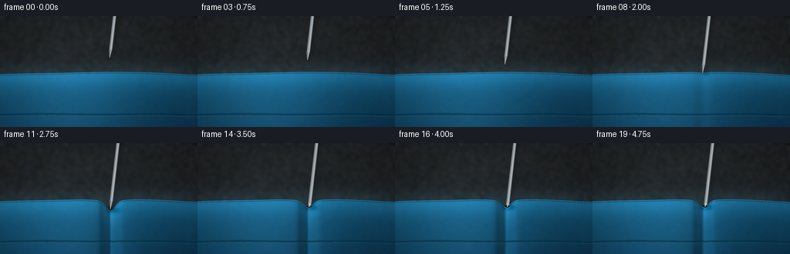
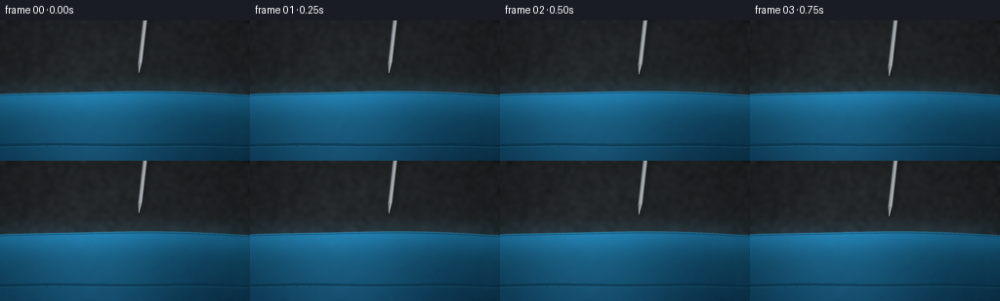

CODING AGENTS AS PIXEL WORLD MODELS
traex/GPT-5.6-Sol · mechanics_0035
点击播放 · 原生 RGB 像素
逐轮保存的候选
回放视频、检查图与代码变化。
每份候选均可单独播放。实际图片检查记录在下方工具轨迹中。
候选 01播放与检查图
点击播放 · 原生 RGB 像素


展开代码变化
--- 上一保存版本
+++ 本次保存版本
@@ -0,0 +1,217 @@
+from pathlib import Path
+import json
+import math
+import numpy as np
+from PIL import Image, ImageDraw, ImageFilter
+import artifact_io
+
+CASE_DIR = Path(__file__).resolve().parent
+SPEC = json.loads((CASE_DIR / "task_spec.json").read_text())
+W, H = int(SPEC["width"]), int(SPEC["height"])
+N, FPS = int(SPEC["frames"]), float(SPEC["fps"])
+S = 4
+WW, HH = W * S, H * S
+rng = np.random.default_rng(350031)
+
+# Stable fine texture: the camera is fixed, so the fabric grain should not shimmer.
+coarse = rng.normal(0, 1, (HH // 8 + 2, WW // 8 + 2)).astype(np.float32)
+coarse_im = Image.fromarray(np.uint8(np.clip(128 + coarse * 31, 0, 255))).resize((WW, HH), Image.Resampling.BICUBIC).filter(ImageFilter.GaussianBlur(8))
+coarse_noise = (np.asarray(coarse_im, dtype=np.float32) - 128) / 20
+fine_noise = rng.normal(0, 1, (HH, WW)).astype(np.float32)
+
+Y, X = np.mgrid[0:HH, 0:WW].astype(np.float32)
+x = X / S
+y = Y / S
+
+
+def smoothstep(v):
+ v = np.clip(v, 0.0, 1.0)
+ return v * v * (3.0 - 2.0 * v)
+
+
+def top_profile(xs, needle_x, dimple):
+ # Broad convexity gives the unmistakable taut crown of an inflated chamber.
+ crown = 81.0 - 8.2 * np.sqrt(np.clip(1.0 - ((xs - 127.0) / 164.0) ** 2, 0.0, 1.0))
+ crown += 0.55 * np.sin((xs - 18.0) / 31.0)
+ # A narrow center dent nested inside a wider tension depression.
+ if dimple > 0:
+ crown += dimple * np.exp(-((xs - needle_x) / 8.2) ** 2)
+ crown += 0.18 * dimple * np.exp(-((xs - needle_x) / 23.0) ** 2)
+ return crown
+
+
+def line_poly(draw, points, fill, width, joint="curve"):
+ draw.line([(int(a*S), int(b*S)) for a, b in points], fill=fill, width=max(1, int(width*S)), joint=joint)
+
+
+def render_frame(index):
+ u = index / (N - 1)
+ motion = smoothstep(u)
+ needle_x = 142.2 + 1.2 * motion
+ tip_y = 53.5 + 52.0 * motion
+ base_here = float(top_profile(np.array([needle_x]), needle_x, 0.0)[0])
+ press = np.clip((tip_y - base_here) / 14.0, 0.0, 1.0)
+ pierce = smoothstep((tip_y - (base_here + 12.0)) / 15.0)
+ # Before puncture, the taut skin follows the point. Afterward it rebounds slightly
+ # and grips the shaft, leaving a small puckered opening.
+ dimple = max(0.0, tip_y - base_here)
+ dimple = min(dimple, 13.0)
+ dimple = dimple * (1.0 - 0.31 * pierce)
+ top = top_profile(x, needle_x, dimple)
+
+ # Soft, out-of-focus studio background with a vignette.
+ bg_light = 1.0 - 0.21 * np.sqrt(((x - 124) / 165) ** 2 + ((y - 53) / 105) ** 2)
+ bg_light += 0.10 * np.exp(-(((x - 72) / 70) ** 2 + ((y - 35) / 52) ** 2))
+ arr = np.empty((HH, WW, 3), dtype=np.float32)
+ arr[..., 0] = 35 * bg_light + 4.0 * coarse_noise
+ arr[..., 1] = 38 * bg_light + 4.4 * coarse_noise
+ arr[..., 2] = 40 * bg_light + 5.0 * coarse_noise
+ # A faint blurred rear air chamber reinforces the mattress scale and depth.
+ rear = np.exp(-((y - 75.0) / 13.5) ** 2) * np.exp(-((x - 122) / 155.0) ** 6)
+ rear *= (y < 82)
+ arr[..., 0] += rear * 6
+ arr[..., 1] += rear * 18
+ arr[..., 2] += rear * 23
+
+ mask = y >= top
+ depth = np.maximum(0.0, y - top)
+ # Cool turquoise vinyl/fabric, brightest where the curved surface faces the light.
+ broad_hi = np.exp(-((x - 91.0) / 91.0) ** 2)
+ crown_hi = np.exp(-(depth / 18.0) ** 2)
+ lower_falloff = np.clip(depth / 88.0, 0, 1)
+ normal_slope = np.gradient(top, axis=1) * S
+ directional = np.clip(1.0 - 0.55 * normal_slope, 0.72, 1.18)
+ weave = (0.75 * np.sin(X * 0.49 + Y * 0.17) + 0.55 * np.sin(X * 0.16 - Y * 0.53))
+ grain = 2.1 * fine_noise + 1.15 * weave + 1.6 * coarse_noise
+ r = (17 + 12*broad_hi + 7*crown_hi - 8*lower_falloff) * directional + grain*0.34
+ g = (74 + 31*broad_hi + 24*crown_hi - 30*lower_falloff) * directional + grain*0.74
+ b = (102 + 40*broad_hi + 35*crown_hi - 34*lower_falloff) * directional + grain*0.94
+ for c, src in enumerate((r, g, b)):
+ arr[..., c] = np.where(mask, src, arr[..., c])
+
+ # Contact shadow cast onto the taut fabric (softens as it falls into the dimple).
+ if press > 0:
+ sh = np.exp(-((x - (needle_x + 5.0)) / (4.0 + 4.0*press)) ** 2
+ - ((y - (base_here + dimple + 2.0)) / (2.0 + 1.8*press)) ** 2)
+ sh *= mask
+ arr[..., 0] -= sh * (10 + 17*press)
+ arr[..., 1] -= sh * (12 + 21*press)
+ arr[..., 2] -= sh * (13 + 23*press)
+
+ arr = np.uint8(np.clip(arr, 0, 255))
+ im = Image.fromarray(arr, "RGB")
+
+ # Soft contour shadows and mattress construction details.
+ overlay = Image.new("RGBA", (WW, HH), (0, 0, 0, 0))
+ od = ImageDraw.Draw(overlay, "RGBA")
+ profile_pts = [(float(xx), float(top_profile(np.array([xx]), needle_x, dimple)[0])) for xx in np.linspace(0, W-1, 180)]
+ line_poly(od, [(a, b+1.5) for a,b in profile_pts], (7, 41, 58, 90), 1.35)
+ line_poly(od, [(a, b+0.15) for a,b in profile_pts], (92, 176, 194, 75), 0.55)
+
+ # Lower welded channel: curved groove with specular lower lip and tiny regular embosses.
+ groove_y = 129.0
+ line_poly(od, [(-3, groove_y-0.8), (54, groove_y-2.1), (126, groove_y-1.2), (200, groove_y-2.0), (260, groove_y-0.5)], (4, 44, 65, 118), 3.1)
+ line_poly(od, [(-3, groove_y+1.1), (54, groove_y-0.1), (126, groove_y+0.8), (200, groove_y), (260, groove_y+1.6)], (86, 160, 177, 60), 0.75)
+ for sx in range(9, 257, 13):
+ sy = groove_y - 0.7 + 0.7*math.sin(sx/31)
+ od.ellipse(((sx-0.75)*S, (sy-0.35)*S, (sx+0.75)*S, (sy+0.35)*S), fill=(8, 52, 71, 95))
+
+ # Puckering wrinkles radiate from the point only after pressure begins.
+ if press > 0.05:
+ cy = base_here + dimple
+ alpha = int(90 * press)
+ for side in (-1, 1):
+ for j in range(3):
+ span = 8.5 + j*5.7
+ yy = cy - 0.3 - j*1.9
+ pts = []
+ for q in np.linspace(0, 1, 18):
+ xx = needle_x + side*(2.1 + span*q)
+ curve = yy - (1.1 + j*.35)*math.sin(math.pi*q) + 0.14*j*q
+ pts.append((xx, curve))
+ line_poly(od, pts, (5, 50, 67, max(18, alpha-j*20)), 0.7)
+ line_poly(od, [(a,b-0.75) for a,b in pts], (112, 192, 202, max(12, alpha//2-j*10)), 0.4)
+ im = Image.alpha_composite(im.convert("RGBA"), overlay)
+
+ # Needle shadow above the surface: a subtle displaced line implies proximity.
+ shadow = Image.new("RGBA", (WW, HH), (0,0,0,0))
+ sd = ImageDraw.Draw(shadow, "RGBA")
+ lean = 0.115
+ needle_len = 118.0
+ top_x = needle_x + lean * needle_len
+ top_y = tip_y - needle_len
+ if tip_y > base_here - 25:
+ shadow_end_y = min(tip_y, base_here + dimple)
+ shadow_end_x = needle_x + lean*(tip_y-shadow_end_y)
+ line_poly(sd, [(top_x+4.0, top_y+3), (shadow_end_x+4.0, shadow_end_y+3)], (0,0,0,55), 3.8)
+ shadow = shadow.filter(ImageFilter.GaussianBlur(2.4*S))
+ im = Image.alpha_composite(im, shadow)
+
+ # The exposed portion of the metal. Once pierced, the point is under the skin and
+ # the visible shaft terminates naturally inside the dark opening.
+ hole_y = base_here + dimple
+ penetrated = tip_y > hole_y + 1.0 and pierce > 0.02
+ visible_end_y = hole_y + 1.6 if penetrated else tip_y
+ visible_end_x = needle_x + lean*(tip_y-visible_end_y)
+ shaft_start_y = top_y
+ shaft_start_x = top_x
+ vx, vy = visible_end_x-shaft_start_x, visible_end_y-shaft_start_y
+ length = max(1e-6, math.hypot(vx,vy))
+ nx, ny = -vy/length, vx/length
+ half = 2.1
+ needle = Image.new("RGBA", (WW,HH), (0,0,0,0))
+ nd = ImageDraw.Draw(needle, "RGBA")
+
+ # If still exposed, reserve the final 10 px for a long sharp bevel.
+ point_len = 10.5 if not penetrated else 0.0
+ body_end_x = visible_end_x - vx/length*point_len
+ body_end_y = visible_end_y - vy/length*point_len
+ poly = [((shaft_start_x+nx*half)*S, (shaft_start_y+ny*half)*S),
+ ((body_end_x+nx*half)*S, (body_end_y+ny*half)*S),
+ ((body_end_x-nx*half)*S, (body_end_y-ny*half)*S),
+ ((shaft_start_x-nx*half)*S, (shaft_start_y-ny*half)*S)]
+ nd.polygon(poly, fill=(139,146,151,255))
+ # Dark edge and crisp reflected highlight make the slender object legible.
+ line_poly(nd, [(shaft_start_x+nx*half, shaft_start_y+ny*half), (body_end_x+nx*half, body_end_y+ny*half)], (63,67,70,255), 0.7)
+ line_poly(nd, [(shaft_start_x-nx*0.55, shaft_start_y-ny*0.55), (body_end_x-nx*0.55, body_end_y-ny*0.55)], (235,240,240,240), 0.72)
+ line_poly(nd, [(shaft_start_x+nx*0.25, shaft_start_y+ny*0.25), (body_end_x+nx*0.25, body_end_y+ny*0.25)], (184,191,193,210), 0.62)
+ if not penetrated:
+ nd.polygon([((body_end_x+nx*half)*S,(body_end_y+ny*half)*S),
+ (visible_end_x*S,visible_end_y*S),
+ ((body_end_x-nx*half)*S,(body_end_y-ny*half)*S)], fill=(117,123,126,255))
+ line_poly(nd, [(body_end_x-nx*0.55, body_end_y-ny*0.55), (visible_end_x,visible_end_y)], (245,247,244,245), 0.55)
+ im = Image.alpha_composite(im, needle)
+
+ # Dark puncture and raised rim in front of the needle, appearing only at breakthrough.
+ if pierce > 0.015:
+ rim = Image.new("RGBA", (WW,HH), (0,0,0,0))
+ rd = ImageDraw.Draw(rim, "RGBA")
+ hx = visible_end_x
+ hy = hole_y + 0.9
+ a = int(235 * pierce)
+ rd.ellipse(((hx-3.0)*S,(hy-1.35)*S,(hx+3.0)*S,(hy+1.35)*S), fill=(2,25,32,a))
+ # Needle reappears over the rear half of the slit; front fabric rim occludes it.
+ rd.arc(((hx-3.6)*S,(hy-2.0)*S,(hx+3.6)*S,(hy+2.0)*S), 6, 174, fill=(119,197,201,int(175*pierce)), width=max(1,int(.65*S)))
+ rd.arc(((hx-3.8)*S,(hy-1.8)*S,(hx+3.8)*S,(hy+2.2)*S), 185, 353, fill=(3,45,57,int(210*pierce)), width=max(1,int(.9*S)))
+ # Restore a short bright shaft segment into the hole for continuity.
+ line_poly(rd, [(hx+lean*4,hy-4),(hx,hy+.25)], (213,219,218,int(235*pierce)), 1.0)
+ im = Image.alpha_composite(im, rim)
+
+ # Gentle optical vignette and a nearly invisible fixed film grain.
+ out = np.asarray(im.convert("RGB"), dtype=np.float32)
+ yy, xx = np.mgrid[0:HH,0:WW]
+ vign = 1.0 - 0.105*np.clip(((xx-WW/2)/(WW*.69))**2 + ((yy-HH/2)/(HH*.82))**2,0,1)
+ out *= vign[...,None]
+ out = Image.fromarray(np.uint8(np.clip(out,0,255))).resize((W,H), Image.Resampling.LANCZOS)
+ return np.asarray(out, dtype=np.uint8)
+
+
+def main():
+ frames = np.stack([render_frame(i) for i in range(N)], axis=0)
+ assert frames.shape == (N,H,W,3) and frames.dtype == np.uint8
+ artifact_io.save(frames, CASE_DIR)
+ print(f"Saved {N} RGB frames at {W}x{H}, {FPS:g} fps")
+
+
+if __name__ == "__main__":
+ main()
可观测工具轨迹
实际执行的命令与返回图片。
命令 1exit 0
/bin/bash -lc "cat prompt.txt && printf '\\n--- GENERATION_RULES.md ---\\n' && cat GENERATION_RULES.md && printf '\\n--- task_spec.json ---\\n' && cat task_spec.json"
命令 2exit 0
/bin/bash -lc "find . -maxdepth 3 -type f -printf '%p\\n' | sort && printf '\\n--- tools ---\\n' && command -v ffmpeg || true && command -v python3 || true && python3 - <<'PY' mods=['numpy','PIL','cv2','cairo','moviepy','matplotlib'] for m in mods: try: x=__import__(m); print(m,'OK',getattr(x,'__version__','')) except Exception as e: print(m,'NO',e) PY"
命令 3exit 0
/bin/bash -lc "sed -n '1,260p' artifact_io.py"
命令 4exit 0
/bin/bash -lc "cat > generate.py <<'PY'
from pathlib import Path
import json
import math
import numpy as np
from PIL import Image, ImageDraw, ImageFilter
import artifact_io
CASE_DIR = Path(__file__).resolve().parent
SPEC = json.loads((CASE_DIR / \"task_spec.json\").read_text())
W, H = int(SPEC[\"width\"]), int(SPEC[\"height\"])
N, FPS = int(SPEC[\"frames\"]), float(SPEC[\"fps\"])
S = 4
WW, HH = W * S, H * S
rng = np.random.default_rng(350031)
# Stable fine texture: the camera is fixed, so the fabric grain should not shimmer.
coarse = rng.normal(0, 1, (HH // 8 + 2, WW // 8 + 2)).astype(np.float32)
coarse_im = Image.fromarray(np.uint8(np.clip(128 + coarse * 31, 0, 255))).resize((WW, HH), Image.Resampling.BICUBIC).filter(ImageFilter.GaussianBlur(8))
coarse_noise = (np.asarray(coarse_im, dtype=np.float32) - 128) / 20
fine_noise = rng.normal(0, 1, (HH, WW)).astype(np.float32)
Y, X = np.mgrid[0:HH, 0:WW].astype(np.float32)
x = X / S
y = Y / S
def smoothstep(v):
v = np.clip(v, 0.0, 1.0)
return v * v * (3.0 - 2.0 * v)
def top_profile(xs, needle_x, dimple):
# Broad convexity gives the unmistakable taut crown of an inflated chamber.
crown = 81.0 - 8.2 * np.sqrt(np.clip(1.0 - ((xs - 127.0) / 164.0) ** 2, 0.0, 1.0))
crown += 0.55 * np.sin((xs - 18.0) / 31.0)
# A narrow center dent nested inside a wider tension depression.
if dimple > 0:
crown += dimple * np.exp(-((xs - needle_x) / 8.2) ** 2)
crown += 0.18 * dimple * np.exp(-((xs - needle_x) / 23.0) ** 2)
return crown
def line_poly(draw, points, fill, width, joint=\"curve\"):
draw.line([(int(a*S), int(b*S)) for a, b in points], fill=fill, width=max(1, int(width*S)), joint=joint)
def render_frame(index):
u = index / (N - 1)
motion = smoothstep(u)
needle_x = 142.2 + 1.2 * motion
tip_y = 53.5 + 52.0 * motion
base_here = float(top_profile(np.array([needle_x]), needle_x, 0.0)[0])
press = np.clip((tip_y - base_here) / 14.0, 0.0, 1.0)
pierce = smoothstep((tip_y - (base_here + 12.0)) / 15.0)
# Before puncture, the taut skin follows the point. Afterward it rebounds slightly
# and grips the shaft, leaving a small puckered opening.
dimple = max(0.0, tip_y - base_here)
dimple = min(dimple, 13.0)
dimple = dimple * (1.0 - 0.31 * pierce)
top = top_profile(x, needle_x, dimple)
# Soft, out-of-focus studio background with a vignette.
bg_light = 1.0 - 0.21 * np.sqrt(((x - 124) / 165) ** 2 + ((y - 53) / 105) ** 2)
bg_light += 0.10 * np.exp(-(((x - 72) / 70) ** 2 + ((y - 35) / 52) ** 2))
arr = np.empty((HH, WW, 3), dtype=np.float32)
arr[..., 0] = 35 * bg_light + 4.0 * coarse_noise
arr[..., 1] = 38 * bg_light + 4.4 * coarse_noise
arr[..., 2] = 40 * bg_light + 5.0 * coarse_noise
# A faint blurred rear air chamber reinforces the mattress scale and depth.
rear = np.exp(-((y - 75.0) / 13.5) ** 2) * np.exp(-((x - 122) / 155.0) ** 6)
rear *= (y < 82)
arr[..., 0] += rear * 6
arr[..., 1] += rear * 18
arr[..., 2] += rear * 23
mask = y >= top
depth = np.maximum(0.0, y - top)
# Cool turquoise vinyl/fabric, brightest where the curved surface faces the light.
broad_hi = np.exp(-((x - 91.0) / 91.0) ** 2)
crown_hi = np.exp(-(depth / 18.0) ** 2)
lower_falloff = np.clip(depth / 88.0, 0, 1)
normal_slope = np.gradient(top, axis=1) * S
directional = np.clip(1.0 - 0.55 * normal_slope, 0.72, 1.18)
weave = (0.75 * np.sin(X * 0.49 + Y * 0.17) + 0.55 * np.sin(X * 0.16 - Y * 0.53))
grain = 2.1 * fine_noise + 1.15 * weave + 1.6 * coarse_noise
r = (17 + 12*broad_hi + 7*crown_hi - 8*lower_falloff) * directional + grain*0.34
g = (74 + 31*broad_hi + 24*crown_hi - 30*lower_falloff) * directional + grain*0.74
b = (102 + 40*broad_hi + 35*crown_hi - 34*lower_falloff) * directional + grain*0.94
for c, src in enumerate((r, g, b)):
arr[..., c] = np.where(mask, src, arr[..., c])
# Contact shadow cast onto the taut fabric (softens as it falls into the dimple).
if press > 0:
sh = np.exp(-((x - (needle_x + 5.0)) / (4.0 + 4.0*press)) ** 2
- ((y - (base_here + dimple + 2.0)) / (2.0 + 1.8*press)) ** 2)
sh *= mask
arr[..., 0] -= sh * (10 + 17*press)
arr[..., 1] -= sh * (12 + 21*press)
arr[..., 2] -= sh * (13 + 23*press)
arr = np.uint8(np.clip(arr, 0, 255))
im = Image.fromarray(arr, \"RGB\")
# Soft contour shadows and mattress construction details.
overlay = Image.new(\"RGBA\", (WW, HH), (0, 0, 0, 0))
od = ImageDraw.Draw(overlay, \"RGBA\")
profile_pts = [(float(xx), float(top_profile(np.array([xx]), needle_x, dimple)[0])) for xx in np.linspace(0, W-1, 180)]
line_poly(od, [(a, b+1.5) for a,b in profile_pts], (7, 41, 58, 90), 1.35)
line_poly(od, [(a, b+0.15) for a,b in profile_pts], (92, 176, 194, 75), 0.55)
# Lower welded channel: curved groove with specular lower lip and tiny regular embosses.
groove_y = 129.0
line_poly(od, [(-3, groove_y-0.8), (54, groove_y-2.1), (126, groove_y-1.2), (200, groove_y-2.0), (260, groove_y-0.5)], (4, 44, 65, 118), 3.1)
line_poly(od, [(-3, groove_y+1.1), (54, groove_y-0.1), (126, groove_y+0.8), (200, groove_y), (260, groove_y+1.6)], (86, 160, 177, 60), 0.75)
for sx in range(9, 257, 13):
sy = groove_y - 0.7 + 0.7*math.sin(sx/31)
od.ellipse(((sx-0.75)*S, (sy-0.35)*S, (sx+0.75)*S, (sy+0.35)*S), fill=(8, 52, 71, 95))
# Puckering wrinkles radiate from the point only after pressure begins.
if press > 0.05:
cy = base_here + dimple
alpha = int(90 * press)
for side in (-1, 1):
for j in range(3):
span = 8.5 + j*5.7
yy = cy - 0.3 - j*1.9
pts = []
for q in np.linspace(0, 1, 18):
xx = needle_x + side*(2.1 + span*q)
curve = yy - (1.1 + j*.35)*math.sin(math.pi*q) + 0.14*j*q
pts.append((xx, curve))
line_poly(od, pts, (5, 50, 67, max(18, alpha-j*20)), 0.7)
line_poly(od, [(a,b-0.75) for a,b in pts], (112, 192, 202, max(12, alpha//2-j*10)), 0.4)
im = Image.alpha_composite(im.convert(\"RGBA\"), overlay)
# Needle shadow above the surface: a subtle displaced line implies proximity.
shadow = Image.new(\"RGBA\", (WW, HH), (0,0,0,0))
sd = ImageDraw.Draw(shadow, \"RGBA\")
lean = 0.115
needle_len = 118.0
top_x = needle_x + lean * needle_len
top_y = tip_y - needle_len
if tip_y > base_here - 25:
shadow_end_y = min(tip_y, base_here + dimple)
shadow_end_x = needle_x + lean*(tip_y-shadow_end_y)
line_poly(sd, [(top_x+4.0, top_y+3), (shadow_end_x+4.0, shadow_end_y+3)], (0,0,0,55), 3.8)
shadow = shadow.filter(ImageFilter.GaussianBlur(2.4*S))
im = Image.alpha_composite(im, shadow)
# The exposed portion of the metal. Once pierced, the point is under the skin and
# the visible shaft terminates naturally inside the dark opening.
hole_y = base_here + dimple
penetrated = tip_y > hole_y + 1.0 and pierce > 0.02
visible_end_y = hole_y + 1.6 if penetrated else tip_y
visible_end_x = needle_x + lean*(tip_y-visible_end_y)
shaft_start_y = top_y
shaft_start_x = top_x
vx, vy = visible_end_x-shaft_start_x, visible_end_y-shaft_start_y
length = max(1e-6, math.hypot(vx,vy))
nx, ny = -vy/length, vx/length
half = 2.1
needle = Image.new(\"RGBA\", (WW,HH), (0,0,0,0))
nd = ImageDraw.Draw(needle, \"RGBA\")
# If still exposed, reserve the final 10 px for a long sharp bevel.
point_len = 10.5 if not penetrated else 0.0
body_end_x = visible_end_x - vx/length*point_len
body_end_y = visible_end_y - vy/length*point_len
poly = [((shaft_start_x+nx*half)*S, (shaft_start_y+ny*half)*S),
((body_end_x+nx*half)*S, (body_end_y+ny*half)*S),
((body_end_x-nx*half)*S, (body_end_y-ny*half)*S),
((shaft_start_x-nx*half)*S, (shaft_start_y-ny*half)*S)]
nd.polygon(poly, fill=(139,146,151,255))
# Dark edge and crisp reflected highlight make the slender object legible.
line_poly(nd, [(shaft_start_x+nx*half, shaft_start_y+ny*half), (body_end_x+nx*half, body_end_y+ny*half)], (63,67,70,255), 0.7)
line_poly(nd, [(shaft_start_x-nx*0.55, shaft_start_y-ny*0.55), (body_end_x-nx*0.55, body_end_y-ny*0.55)], (235,240,240,240), 0.72)
line_poly(nd, [(shaft_start_x+nx*0.25, shaft_start_y+ny*0.25), (body_end_x+nx*0.25, body_end_y+ny*0.25)], (184,191,193,210), 0.62)
if not penetrated:
nd.polygon([((body_end_x+nx*half)*S,(body_end_y+ny*half)*S),
(visible_end_x*S,visible_end_y*S),
((body_end_x-nx*half)*S,(body_end_y-ny*half)*S)], fill=(117,123,126,255))
line_poly(nd, [(body_end_x-nx*0.55, body_end_y-ny*0.55), (visible_end_x,visible_end_y)], (245,247,244,245), 0.55)
im = Image.alpha_composite(im, needle)
# Dark puncture and raised rim in front of the needle, appearing only at breakthrough.
if pierce > 0.015:
rim = Image.new(\"RGBA\", (WW,HH), (0,0,0,0))
rd = ImageDraw.Draw(rim, \"RGBA\")
hx = visible_end_x
hy = hole_y + 0.9
a = int(235 * pierce)
rd.ellipse(((hx-3.0)*S,(hy-1.35)*S,(hx+3.0)*S,(hy+1.35)*S), fill=(2,25,32,a))
# Needle reappears over the rear half of the slit; front fabric rim occludes it.
rd.arc(((hx-3.6)*S,(hy-2.0)*S,(hx+3.6)*S,(hy+2.0)*S), 6, 174, fill=(119,197,201,int(175*pierce)), width=max(1,int(.65*S)))
rd.arc(((hx-3.8)*S,(hy-1.8)*S,(hx+3.8)*S,(hy+2.2)*S), 185, 353, fill=(3,45,57,int(210*pierce)), width=max(1,int(.9*S)))
# Restore a short bright shaft segment into the hole for continuity.
line_poly(rd, [(hx+lean*4,hy-4),(hx,hy+.25)], (213,219,218,int(235*pierce)), 1.0)
im = Image.alpha_composite(im, rim)
# Gentle optical vignette and a nearly invisible fixed film grain.
out = np.asarray(im.convert(\"RGB\"), dtype=np.float32)
yy, xx = np.mgrid[0:HH,0:WW]
vign = 1.0 - 0.105*np.clip(((xx-WW/2)/(WW*.69))**2 + ((yy-HH/2)/(HH*.82))**2,0,1)
out *= vign[...,None]
out = Image.fromarray(np.uint8(np.clip(out,0,255))).resize((W,H), Image.Resampling.LANCZOS)
return np.asarray(out, dtype=np.uint8)
def main():
frames = np.stack([render_frame(i) for i in range(N)], axis=0)
assert frames.shape == (N,H,W,3) and frames.dtype == np.uint8
artifact_io.save(frames, CASE_DIR)
print(f\"Saved {N} RGB frames at {W}x{H}, {FPS:g} fps\")
if __name__ == \"__main__\":
main()
PY
python3 generate.py
python3 - <<'PY'
from pathlib import Path
import numpy as np
from PIL import Image
p=Path('.')
z=np.load(p/'pixels.npz')['pixels']
print('pixels tensor:',z.shape,z.dtype,'range',int(z.min()),int(z.max()))
imgs=[np.asarray(Image.open(p/'frames'/f'{i:02d}.png')) for i in range(20)]
arr=np.stack(imgs)
print('frames:',arr.shape,arr.dtype,'mean',arr.mean(axis=(0,1,2)).round(2))
print('adjacent MAD:',[round(float(np.abs(arr[i].astype(int)-arr[i-1]).mean()),3) for i in range(1,20)])
print('artifacts:',[(q.name,q.stat().st_size) for q in [p/'pixels.npz',p/'inspection.png',p/'transition_check.png',p/'index.html']])
PY"命令 5exit 0
/bin/bash -lc 'du -h generate.py pixels.npz inspection.png transition_check.png index.html && find frames -maxdepth 1 -type f | sort | tail -3'
命令 6exit 0
/bin/bash -lc "python3 -m py_compile generate.py artifact_io.py && python3 - <<'PY'
from pathlib import Path
from PIL import Image
import numpy as np, json
p=Path('.')
spec=json.loads((p/'task_spec.json').read_text())
files=sorted((p/'frames').glob('*.png'))
assert len(files)==spec['frames'], len(files)
for f in files:
im=Image.open(f)
assert im.mode=='RGB' and im.size==(spec['width'],spec['height']), (f,im.mode,im.size)
assert (p/'pixels.npz').is_file() and (p/'index.html').is_file()
# Confirm there is meaningful localized motion, while the fixed camera/background remain stable.
a=np.stack([np.asarray(Image.open(f)) for f in files]).astype(np.int16)
d=np.abs(np.diff(a,axis=0)).mean(axis=3)
print('validated',len(files),'RGB frames')
print('motion bbox pixels above delta 8:', end=' ')
y,x=np.where(d.max(axis=0)>8)
print((int(x.min()),int(y.min()),int(x.max()),int(y.max())))
print('first-last MAD',round(float(np.abs(a[-1]-a[0]).mean()),3))
PY"保存候选 1 份；完成命令 6 次；可验证图片返回 0 张。原始 API 响应与完整日志保留在本地。